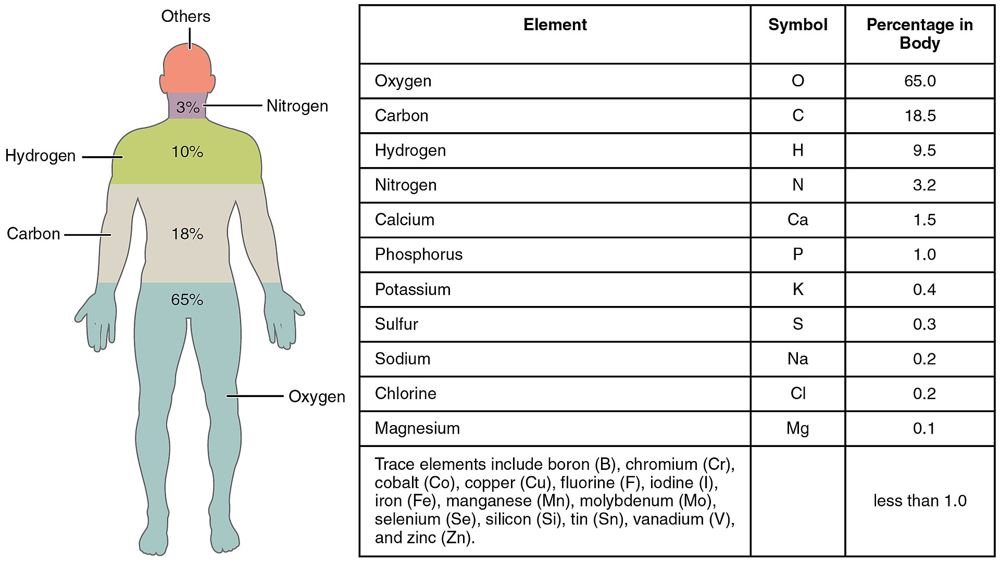

overview of mtrlAtom
description::
× Mcsh-creation: {2020-01-02}
· chemical-atoms are the-innermost nodes of the-material-bodies[a], responsible for its[a] physical and chemical attributes.
name::
* McsEngl.McsNtr000003.last.html//dirNtr//dirMcsh!⇒mtrlAtom,
* McsEngl.dirMcsh/dirNtr/McsNtr000003.last.html!⇒mtrlAtom,
* McsEngl.Chmelt'atom!⇒mtrlAtom,
* McsEngl.atom!⇒mtrlAtom,
* McsEngl.atomMaterial!⇒mtrlAtom,
* McsEngl.atomMtrl!⇒mtrlAtom,
* McsEngl.atom-of-chemical-element!⇒mtrlAtom,
* McsEngl.chemical-atom!⇒mtrlAtom,
* McsEngl.chemical-element's-atom!⇒mtrlAtom,
* McsEngl.material.004-atom!⇒mtrlAtom,
* McsEngl.material.atom!⇒mtrlAtom,
* McsEngl.material-atom!⇒mtrlAtom,
* McsEngl.materialAtom!⇒mtrlAtom,
* McsEngl.mtrlAtom,
* McsEngl.mtrlAtom!~McsNtr000003,
* McsEngl.mtrlAtom!=material.atom,
====== lagoGreek:
* McsElln.υλικό-άτομο!το!=mtrlAtom,
* McsElln.χημικό-άτομο!το!=mtrlAtom,
01_subatomic-particle of mtrlAtom
name::
* McsEngl.mtrlAtom'01_subatomic-particle!⇒ptclSubatomic,
* McsEngl.mtrlAtom'att001-subatomic-particle!⇒ptclSubatomic,
* McsEngl.subatomic-particle!⇒ptclSubatomic,
* McsEngl.ptclSubatomic,
description::
"In the physical sciences, subatomic particles are smaller than atoms.[1] They can be composite particles, such as the neutron and proton; or elementary particles, which according to the standard model are not made of other particles.[2] Particle physics and nuclear physics study these particles and how they interact.[3] The concept of a subatomic particle was refined when experiments showed that light could behave like a stream of particles (called photons) as well as exhibiting wave-like properties. This led to the concept of wave–particle duality to reflect that quantum-scale particles behave like both particles and waves (they are sometimes described as wavicles to reflect this[citation needed]). Another concept, the uncertainty principle, states that some of their properties taken together, such as their simultaneous position and momentum, cannot be measured exactly.[4] The wave–particle duality has been shown to apply not only to photons but to more massive particles as well.[5]
Interactions of particles in the framework of quantum field theory are understood as creation and annihilation of quanta of corresponding fundamental interactions. This blends particle physics with field theory."
[{2020-03-30} https://en.wikipedia.org/wiki/Subatomic_particle]
specific-tree-of-::
* elementrary-particle,
* composite-particle,
electric-charge of ptclSubatomic
name::
* McsEngl.mtrlAtom'att003'subatomic-particle'electric-charge,
* McsEngl.subatomic-particle'electric-charge,
description::
"All observable subatomic particles have their electric charge an integer multiple of the elementary charge. The Standard Model's quarks have "non-integer" electric charges, namely, multiple of 1⁄3 e, but quarks (and other combinations with non-integer electric charge) cannot be isolated due to color confinement. For baryons, mesons, and their antiparticles the constituent quarks' charges sum up to an integer multiple of e."
[{2020-03-30} https://en.wikipedia.org/wiki/Subatomic_particle]
ptclSubatomic.elementary-001
name::
* McsEngl.ptclSubatomic.001-elementary,
* McsEngl.ptclSubatomic.elementary-001,
* McsEngl.mtrlAtom'att002-elementary-particle,
* McsEngl.mtrlAtom'elementary-particle,
* McsEngl.elementary-particle,
* McsEngl.fundamental-particle,
description::
"In particle physics, an elementary particle or fundamental particle is a subatomic particle with no sub structure, thus not composed of other particles.[1] Particles currently thought to be elementary include the fundamental fermions (quarks, leptons, antiquarks, and antileptons), which generally are "matter particles" and "antimatter particles", as well as the fundamental bosons (gauge bosons and the Higgs boson), which generally are "force particles" that mediate interactions among fermions.[1] A particle containing two or more elementary particles is a composite particle.
Ordinary matter is composed of atoms, once presumed to be elementary particles—atom meaning "unable to cut" in Greek—although the atom's existence remained controversial until about 1910, as some leading physicists regarded molecules as mathematical illusions, and matter as ultimately composed of energy.[1][2] Subatomic constituents of the atom were identified in the early 1930s; the electron and the proton, along with the photon, the particle of electromagnetic radiation.[1] At that time, the recent advent of quantum mechanics was radically altering the conception of particles, as a single particle could seemingly span a field as would a wave, a paradox still eluding satisfactory explanation.[3][4]
Via quantum theory, protons and neutrons were found to contain quarks—up quarks and down quarks—now considered elementary particles.[1] And within a molecule, the electron's three degrees of freedom (charge, spin, orbital) can separate via the wavefunction into three quasiparticles (holon, spinon, orbiton).[5] Yet a free electron—which is not orbiting an atomic nucleus and lacks orbital motion—appears unsplittable and remains regarded as an elementary particle.[5]
Around 1980, an elementary particle's status as indeed elementary—an ultimate constituent of substance—was mostly discarded for a more practical outlook,[1] embodied in particle physics' Standard Model, what's known as science's most experimentally successful theory.[4][6] Many elaborations upon and theories beyond the Standard Model, including the popular supersymmetry, double the number of elementary particles by hypothesizing that each known particle associates with a "shadow" partner far more massive,[7][8] although all such superpartners remain undiscovered.[6][9] Meanwhile, an elementary boson mediating gravitation—the graviton—remains hypothetical.[1] Also, as hypotheses indicate, spacetime is probably quantized, so there most likely exist "atoms" of space and time itself.[10]"
[{2020-03-30} https://en.wikipedia.org/wiki/Elementary_particle]
ptclSubatomic.composite-002
name::
* McsEngl.ptclSubatomic.002-composite,
* McsEngl.ptclSubatomic.composite-002,
* McsEngl.mtrlAtom'att004-composite-particle,
* McsEngl.mtrlAtom'composite-particle,
* McsEngl.composite-particle,
description::
"In the physical sciences, subatomic particles are smaller than atoms.[1] They can be composite particles, such as the neutron and proton; or elementary particles, which according to the standard model are not made of other particles."
[https://en.wikipedia.org/wiki/Subatomic_particlehttps://en.wikipedia.org/wiki/Subatomic_particle]
ptclSubatomic.nucleon-003
name::
* McsEngl.ptclSubatomic.003-nucleon, /nnúkleon/,
* McsEngl.ptclSubatomic.nucleon-003,
* McsEngl.nucleon,
description::
"In chemistry and physics, a nucleon is either a proton or a neutron, considered in its role as a component of an atomic nucleus. The number of nucleons in a nucleus defines an isotope's mass number (nucleon number).
Until the 1960s, nucleons were thought to be elementary particles, not made up of smaller parts. Now they are known to be composite particles, made of three quarks bound together by the so-called strong interaction. The interaction between two or more nucleons is called internucleon interaction or nuclear force, which is also ultimately caused by the strong interaction. (Before the discovery of quarks, the term "strong interaction" referred to just internucleon interactions.)
Nucleons sit at the boundary where particle physics and nuclear physics overlap. Particle physics, particularly quantum chromodynamics, provides the fundamental equations that explain the properties of quarks and of the strong interaction. These equations explain quantitatively how quarks can bind together into protons and neutrons (and all the other hadrons). However, when multiple nucleons are assembled into an atomic nucleus (nuclide), these fundamental equations become too difficult to solve directly (see lattice QCD). Instead, nuclides are studied within nuclear physics, which studies nucleons and their interactions by approximations and models, such as the nuclear shell model. These models can successfully explain nuclide properties, as for example, whether or not a particular nuclide undergoes radioactive decay.
The proton and neutron are in a scheme of categories being at once fermions, hadrons and baryons. The proton carries a positive net charge and the neutron carries a zero net charge; the proton's mass is only about 0.13% less than the neutron's. Thus, they can be viewed as two states of the same nucleon, and together form an isospin doublet (I = 1⁄2). In isospin space, neutrons can be transformed into protons via SU(2) symmetries, and vice versa. These nucleons are acted upon equally by the strong interaction, which is invariant under rotation in isospin space. According to the Noether theorem, isospin is conserved with respect to the strong interaction.[1]:129–130"
[{2020-03-31} https://en.wikipedia.org/wiki/Nucleon]
ptclSubatomic.hadron-004
name::
* McsEngl.ptclSubatomic.004-hadron,
* McsEngl.ptclSubatomic.hadron-004,
* McsEngl.hadron,
description::
"In particle physics, a hadron /ˈhædrɒn/ (About this soundlisten) (Greek: ἁδρός, hadrós; "stout, thick") is a subatomic composite particle made of two or more quarks held together by the strong force in a similar way as molecules are held together by the electromagnetic force. Most of the mass of ordinary matter comes from two hadrons, the proton and the neutron.
Hadrons are categorized into two families: baryons, made of an odd number of quarks – usually three quarks – and mesons, made of an even number of quarks—usually one quark and one antiquark.[1] Protons and neutrons are examples of baryons; pions are an example of a meson. "Exotic" hadrons, containing more than three valence quarks, have been discovered in recent years. A tetraquark state (an exotic meson), named the Z(4430)−, was discovered in 2007 by the Belle Collaboration[2] and confirmed as a resonance in 2014 by the LHCb collaboration.[3] Two pentaquark states (exotic baryons), named P+c(4380) and P+c(4450), were discovered in 2015 by the LHCb collaboration.[4] There are several more exotic hadron candidates, and other colour-singlet quark combinations that may also exist.
Almost all "free" hadrons and antihadrons (meaning, in isolation and not bound within an atomic nucleus) are believed to be unstable and eventually decay (break down) into other particles. The only known exception relates to free protons, which are possibly stable, or at least, take immense amounts of time to decay (order of 1034+ years). Free neutrons are unstable and decay with a half-life of about 611 seconds. Their respective antiparticles are expected to follow the same pattern, but they are difficult to capture and study, because they immediately annihilate on contact with ordinary matter. "Bound" protons and neutrons, contained within an atomic nucleus, are generally considered stable. Experimentally, hadron physics is studied by colliding protons or nuclei of heavy elements such as lead or gold, and detecting the debris in the produced particle showers. In the natural environment, mesons such as pions are produced by the collisions of cosmic rays with the atmosphere."
[{2020-03-31} https://en.wikipedia.org/wiki/Hadron]
02_nucleus of mtrlAtom
description::
"The atomic nucleus is the small, dense region consisting of protons and neutrons at the center of an atom, discovered in 1911 by Ernest Rutherford based on the 1909 Geiger–Marsden gold foil experiment. After the discovery of the neutron in 1932, models for a nucleus composed of protons and neutrons were quickly developed by Dmitri Ivanenko[1] and Werner Heisenberg.[2][3][4][5][6] An atom is composed of a positively-charged nucleus, with a cloud of negatively-charged electrons surrounding it, bound together by electrostatic force. Almost all of the mass of an atom is located in the nucleus, with a very small contribution from the electron cloud. Protons and neutrons are bound together to form a nucleus by the nuclear force.
The diameter of the nucleus is in the range of 1.7566 fm (1.7566×10−15 m) for hydrogen (the diameter of a single proton) to about 11.7142 fm for the heaviest atom uranium.[7] These dimensions are much smaller than the diameter of the atom itself (nucleus + electron cloud), by a factor of about 26,634 (uranium atomic radius is about 156 pm (156×10−12 m))[8] to about 60,250 (hydrogen atomic radius is about 52.92 pm).[a]
The branch of physics concerned with the study and understanding of the atomic nucleus, including its composition and the forces which bind it together, is called nuclear physics."
[{2020-01-03} https://en.wikipedia.org/wiki/Atomic_nucleus]
name::
* McsEngl.mtrlAtom'02_nucleus,
* McsEngl.mtrlAtom'att005-nucleus,
* McsEngl.mtrlAtom'nucleus,
* McsEngl.mtrlAtom'nuclei!=plural, /nnúkleai/,
* McsEngl.atomic-nucleus,
* McsEngl.nucleus-of-atom,
03_proton of mtrlAtom
name::
* McsEngl.ptclSubatomic.005-proton,
* McsEngl.ptclSubatomic.proton-005,
* McsEngl.mtrlAtom'03_proton,
* McsEngl.mtrlAtom'att006_proton,
* McsEngl.mtrlAtom'proton,
* McsEngl.proton-of-mtrlAtom,
description::
"A proton is a subatomic particle, symbol p or p+, with a positive electric charge of +1e elementary charge and a mass slightly less than that of a neutron. Protons and neutrons, each with masses of approximately one atomic mass unit, are collectively referred to as "nucleons" (particles present in atomic nuclei).
One or more protons are present in the nucleus of every atom; they are a necessary part of the nucleus. The number of protons in the nucleus is the defining property of an element, and is referred to as the atomic number (represented by the symbol Z). Since each element has a unique number of protons, each element has its own unique atomic number.
The word proton is Greek for "first", and this name was given to the hydrogen nucleus by Ernest Rutherford in 1920. In previous years, Rutherford had discovered that the hydrogen nucleus (known to be the lightest nucleus) could be extracted from the nuclei of nitrogen by atomic collisions.[3] Protons were therefore a candidate to be a fundamental particle, and hence a building block of nitrogen and all other heavier atomic nuclei.
Although protons were originally considered fundamental or elementary particles, in the modern Standard Model of particle physics, protons are classified as hadrons, like neutrons, the other nucleon. Protons are composite particles composed of three valence quarks: two up quarks of charge +2/3e and one down quark of charge –1/3e. The rest masses of quarks contribute only about 1% of a proton's mass.[4] The remainder of a proton's mass is due to quantum chromodynamics binding energy, which includes the kinetic energy of the quarks and the energy of the gluon fields that bind the quarks together. Because protons are not fundamental particles, they possess a measurable size; the root mean square charge radius of a proton is about 0.84–0.87 fm (or 0.84×10−15 to 0.87×10−15 m).[5][6] In 2019, two different studies, using different techniques, have found the radius of the proton to be 0.833 fm, with an uncertainty of ±0.010 fm.[7][8]
At sufficiently low temperatures, free protons will bind to electrons. However, the character of such bound protons does not change, and they remain protons. A fast proton moving through matter will slow by interactions with electrons and nuclei, until it is captured by the electron cloud of an atom. The result is a protonated atom, which is a chemical compound of hydrogen. In vacuum, when free electrons are present, a sufficiently slow proton may pick up a single free electron, becoming a neutral hydrogen atom, which is chemically a free radical. Such "free hydrogen atoms" tend to react chemically with many other types of atoms at sufficiently low energies. When free hydrogen atoms react with each other, they form neutral hydrogen molecules (H2), which are the most common molecular component of molecular clouds in interstellar space."
[{2020-03-31} https://en.wikipedia.org/wiki/Proton]
04_nutron of mtrlAtom
name::
* McsEngl.ptclSubatomic.006-nutron,
* McsEngl.ptclSubatomic.nutron-006,
* McsEngl.mtrlAtom'04_nutron,
* McsEngl.mtrlAtom'nutron,
* McsEngl.nutron-of-atom,
description::
"The neutron is a subatomic particle, symbol n or n0, with no net electric charge and a mass slightly greater than that of a proton. Protons and neutrons constitute the nuclei of atoms. Since protons and neutrons behave similarly within the nucleus, and each has a mass of approximately one atomic mass unit, they are both referred to as nucleons.[6] Their properties and interactions are described by nuclear physics.
The chemical and nuclear properties of the nucleus are determined by the number of protons, called the atomic number, and the number of neutrons, called the neutron number. The atomic mass number is the total number of nucleons. For example, carbon has atomic number 6, and its abundant carbon-12 isotope has 6 neutrons, whereas its rare carbon-13 isotope has 7 neutrons. Some elements occur in nature with only one stable isotope, such as fluorine. Other elements occur with many stable isotopes, such as tin with ten stable isotopes.
Within the nucleus, protons and neutrons are bound together through the nuclear force. Neutrons are required for the stability of nuclei, with the exception of the single-proton hydrogen atom. Neutrons are produced copiously in nuclear fission and fusion. They are a primary contributor to the nucleosynthesis of chemical elements within stars through fission, fusion, and neutron capture processes.
The neutron is essential to the production of nuclear power. In the decade after the neutron was discovered by James Chadwick in 1932,[7] neutrons were used to induce many different types of nuclear transmutations. With the discovery of nuclear fission in 1938,[8] it was quickly realized that, if a fission event produced neutrons, each of these neutrons might cause further fission events, in a cascade known as a nuclear chain reaction.[9] These events and findings led to the first self-sustaining nuclear reactor (Chicago Pile-1, 1942) and the first nuclear weapon (Trinity, 1945).
Free neutrons, while not directly ionizing atoms, cause ionizing radiation. As such they can be a biological hazard, depending upon dose.[9] A small natural "neutron background" flux of free neutrons exists on Earth, caused by cosmic ray showers, and by the natural radioactivity of spontaneously fissionable elements in the Earth's crust.[10] Dedicated neutron sources like neutron generators, research reactors and spallation sources produce free neutrons for use in irradiation and in neutron scattering experiments."
[{2020-03-30} https://en.wikipedia.org/wiki/Neutron]
05_electron of mtrlAtom
name::
* McsEngl.electron,
* McsEngl.electron-of-mtrlAtom!⇒electron,
* McsEngl.mtrlAtom'05_electron!⇒electron,
* McsEngl.mtrlAtom'att008-electron!⇒electron,
* McsEngl.mtrlAtom'electron!⇒electron,
* McsEngl.ptclSubatomic.007-electron!⇒electron,
* McsEngl.ptclSubatomic.electron-007!⇒electron,
description::
"Atoms are made up of even smaller subatomic particles, three types of which are important: the proton, neutron, and electron. The number of positively-charged protons and non-charged (“neutral”) neutrons, gives mass to the atom, and the number of each in the nucleus of the atom determine the element. The number of negatively-charged electrons that “spin” around the nucleus at close to the speed of light equals the number of protons. An electron has about 1/2000th the mass of a proton or neutron."
[https://courses.lumenlearning.com/ap1/chapter/elements-and-atoms-the-building-blocks-of-matter/]
wave-nature of electron
description::
"Happy Birthday to one of the pioneers of Quantum Mechanics, Louis de Broglie, born 128 yrs ago today.
L. de Broglie, in his 1924 PhD thesis, postulated the wave nature of electrons and suggested that all matter has wave properties. He received the 1929 Nobel Prize in Physics."
[{2020-08-15} https://twitter.com/PhysInHistory/status/1294524616988176384]
name::
* McsEngl.electron'att001-wave-nature,
* McsEngl.electron'wave-nature,
info-resource of electron
description::
· {2020-07-03} https://www.amna.gr/home/article/470924/Neo-panischuro-mikroskopio-fotografizei-ilektronia-mesa-sta-sterea-somata,
name::
* McsEngl.electron'InfRsc,
06_valence of mtrlAtom
description::
"In chemistry, the valence or valency of an element is a measure of its combining power with other atoms when it forms chemical compounds or molecules. The concept of valence was developed in the second half of the 19th century and helped successfully explain the molecular structure of inorganic and organic compounds.[1] The quest for the underlying causes of valence led to the modern theories of chemical bonding, including the cubical atom (1902), Lewis structures (1916), valence bond theory (1927), molecular orbitals (1928), valence shell electron pair repulsion theory (1958), and all of the advanced methods of quantum chemistry."
[{2020-01-03} https://en.wikipedia.org/wiki/Valence_(chemistry)]
name::
* McsEngl.mtrlAtom'06_valence,
* McsEngl.mtrlAtom'att009-valence,
* McsEngl.mtrlAtom'valence,
07_size of mtrlAtom
name::
* McsEngl.mtrlAtom'07_size,
* McsEngl.mtrlAtom'att010-size,
* McsEngl.mtrlAtom'size,
description::
≈ 1×10-10 meters.
[https://www.wolframalpha.com/input/?i=size+of+atom]
08_resource of mtrlAtom
name::
* McsEngl.mtrlAtom'08_resource,
* McsEngl.mtrlAtom'attResource,
* McsEngl.mtrlAtom'InfRsc,
description::
*
09_structure of mtrlAtom
name::
* McsEngl.mtrlAtom'09_structure,
* McsEngl.mtrlAtom'attStructure,
* McsEngl.mtrlAtom'structure,
description::
·
10_DOING of mtrlAtom
name::
* McsEngl.mtrlAtom'10_doing,
* McsEngl.mtrlAtom'attDoing,
* McsEngl.mtrlAtom'doing,
description::
·
11_EVOLUTING of mtrlAtom
name::
* McsEngl.mtrlAtom'11_evoluting,
* McsEngl.mtrlAtom'attEvoluting,
* McsEngl.evoluting-of-mtrlAtom,
* McsEngl.mtrlAtom'evoluting,
{2020-01-02}::
=== McsHitp-creation:
· creation of current concept.
WHOLE-PART-TREE of mtrlAtom
name::
* McsEngl.mtrlAtom'whole-part-tree,
whole-chain::
* molecule or substance-chemical-element,
* material-body,
* Sympan,
part::
* subatomic-particle,
GENERIC-SPECIFIC-TREE of mtrlAtom
name::
* McsEngl.mtrlAtom'generic-specific-tree,
generic-tree::
* body-node,
* body, doing, relation,
* entity,
atom.SPECIFIC
name::
* McsEngl.mtrlAtom.specific,
specific::
* ion-(ionized)-atom,
* ionNo-(neutral)-atom,
mtrlAtom.aggregate-001
{2010} = 118
[{2020-01-03} https://en.wikipedia.org/wiki/Chemical_element]
{1869} = 63
Έτσι δημιουργήθηκε από τον Mendeleev ο πρώτος πίνακας ταξινόμησης των 63 γνωστών για την εποχή εκείνη στοιχείων.
[http://digitalschool.minedu.gov.gr/modules/ebook/show.php/DSGL111/394/2612,10245/]
description::
"There are more atoms in a grain of sand than there are grains of sand on earth."
[{2023-09-30 retrieved} https://twitter.com/engineers_feed/status/1707976200847511787]
name::
* McsEngl.mtrlAtom.001-aggregate,
* McsEngl.mtrlAtom.aggregate-001,
mtrlAtom.ion-002
name::
* McsEngl.mtrlAtom.002-ion, /áion/,
* McsEngl.mtrlAtom.ion-002,
* McsEngl.atomIon,
* McsEngl.ion-mtrlAtom-002,
description::
"An ion (/ˈaɪɒn, -ən/)[1] is an atom or molecule that has a net electrical charge. Since the charge of the electron (considered negative by convention) is equal and opposite to that of the proton (considered positive by convention), the net charge of an ion is non-zero due to its total number of electrons being unequal to its total number of protons. A cation is a positively charged ion, with fewer electrons than protons, while an anion is negatively charged, with more electrons than protons. Because of their opposite electric charges, cations and anions attract each other and readily form ionic compounds.
Ions consisting of only a single atom are termed atomic or monatomic ions, while two or more atoms form molecular ions or polyatomic ions. In the case of physical ionization in a fluid (gas or liquid), "ion pairs" are created by spontaneous molecule collisions, where each generated pair consists of a free electron and a positive ion.[2] Ions are also created by chemical interactions, such as the dissolution of a salt in liquids, or by other means, such as passing a direct current through a conducting solution, dissolving an anode via ionization."
[{2015-03-10} https://en.wikipedia.org/wiki/Ion]
mtrlAtom.ionNo-003
name::
* McsEngl.mtrlAtom.003-ionNo,
* McsEngl.mtrlAtom.ionNo-003,
* McsEngl.atomIonNo,
description::
·
mtrlAtom.organism-004
name::
* McsEngl.mtrlAtom.004-organism!⇒atomOgm,
* McsEngl.mtrlAtom.organism-004!⇒atomOgm,
* McsEngl.atomOgm,
* McsEngl.atom-of-ogm-001!⇒atomOgm,
* McsEngl.bioatom-001!⇒atomOgm,
* McsEngl.biological-atom!⇒atomOgm,
* McsEngl.ogm'att001-atom!⇒atomOgm,
* McsEngl.ogm'atom-att001!⇒atomOgm,
description::
·
mtrlAtom.organismNo-005
name::
* McsEngl.mtrlAtom.005organismNo,
* McsEngl.mtrlAtom.organismNo-005,
* McsEngl.atomOgmNo,
description::
·
mtrlAtom.human-006
definition::
specific-definition-of-atom:
· atomHmn is any material-body-atom of humans.
===
generic-definition-of-atom:
· atomHmn is any of the-individual-atoms of humans.
===
part-definition-of-atom:
· atomHmn is the-indivisible parts of human-substances by metabolism.
===
whole-definition-of-atom:
· start.
· atoms are the-units of human-body.
name::
* McsEngl.mtrlAtom.006-human!⇒atomHmn,
* McsEngl.mtrlAtom.human-006!⇒atomHmn,
* McsEngl.atomHmn,
* McsEngl.atom-of-bodyHmn!⇒atomHmn,
* McsEngl.bodyHmn'atom!⇒atomHmn,
* McsEngl.bodyHmn'att006-atom!⇒atomHmn,
* McsEngl.bodyHmn'atom-att006!⇒atomHmn,
* McsEngl.bodyHmn'unit!⇒atomHmn,
* McsEngl.sysMoleculesHmn.025-atom!⇒atomHmn,
* McsEngl.sysMoleculesHmn.atom-025!⇒atomHmn,
* McsEngl.unit-of-bodyHmn!⇒atomHmn,
description::
· the-atoms of a-human-body:

[https://en.wikipedia.org/wiki/Human_body#/media/File:201_Elements_of_the_Human_Body-01.jpg]
===
How Many Atoms Does the Human Body Contain?
There are roughly 7 octillion (7,000,000,000,000,000,000,000,000,000) atoms in an adult human's body.
There are about 7 octillion atoms in the adult human body.
The number of atoms in the human body is never constant, but an estimate can be calculated based on the average weight of a human adult and the average mass of an atom.
An average human weighs 70 kilograms (about 154 pounds) and the average mass of an atom is a thousandth of a trillion of a trillion of 1 kilogram (0 followed by 27 decimal places).
The calculation results in 7 octillion atoms or a 7 followed by 27 zeroes.
[http://www.wisegeek.com/how-many-atoms-does-the-human-body-contain.htm?m,]
mtrlAtom.plant-007
name::
* McsEngl.mtrlAtom.007-plant!⇒atomPlnt,
* McsEngl.mtrlAtom.plant-007!⇒atomPlnt,
* McsEngl.atomPlnt,
* McsEngl.ogmPlant'att008-atom!⇒atomPlnt,
* McsEngl.ogmPlant'atom-att008!⇒atomPlnt,
description::
·
mtrlAtom.nuclide
description::
"A nuclide (or nucleide, from nucleus, also known as nuclear species) is an atomic species characterized by the specific constitution of its nucleus, i.e., by its number of protons, Z, its number of neutrons, N, and its nuclear energy state.[1]
The word nuclide was proposed by Truman P. Kohman in 1947.[2][3] Kohman originally suggested nuclide as referring to a "species of atom characterized by the constitution of its nucleus" defined by containing a certain number of neutrons and protons. The word thus was originally intended to focus on the nucleus."
name::
* McsEngl.mtrlAtom.nucleide,
* McsEngl.mtrlAtom.nuclide, /nnúklaid/
* McsEngl.nuclide-mtrlAtom,